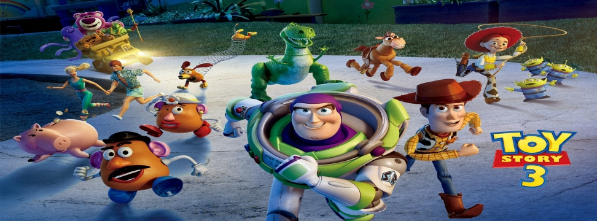

玩具總動員3(Toy Story3)
2010年6月18日

【片長時間】 約１０３分鐘
【作品類別】 迪士尼/皮克斯動畫，長篇劇情動畫片。
【原著取材】 由迪士尼電腦動畫【玩具總動員】衍生劇情
【內容介紹】【玩具總動員】由迪士尼與皮克斯合作於１９９５年推出上映，雙方又繼續在１９９９年推出【玩具總動員２】，之後歷經迪士尼與皮克斯的續約問題，期間一度傳出迪士尼要自行製作【玩具總動員３】，後來在２００６年合約問題解決後，皮克斯正式納入迪士尼，正式的【玩具總動員３】開拍計畫終於在２００７年初敲定，本片同樣是迪士尼／皮克斯的原有模式製作，而且第三集也同時推出『３Ｄ立體電影版』上映，在本片上映之前【玩具總動員】和【玩具總動員２】也都推出『３Ｄ立體電影版本』重返大銀幕。
至於第三集的故事內容則是發生在多年以後，玩具們的小主人 Andy 已經長大要去上大學，媽媽居然誤以為 Andy 不要他的玩具了，便將玩具們捐贈給托兒所，早已經有心理準備的 Woody 、Buzz Lightyear 等玩具們，原本還很高興可以躲過進入垃圾堆的命運，可以繼續為小朋友們服務，沒想到後來發現托兒所的兒童也是玩具虐待狂，而且幕後還有陰謀，玩具們於是打算要展開一場逃亡計畫，他們會遭遇什麼樣的下場呢？